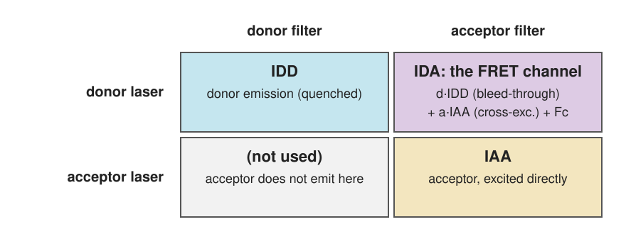
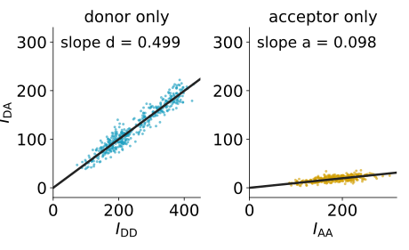
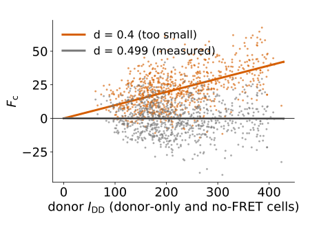
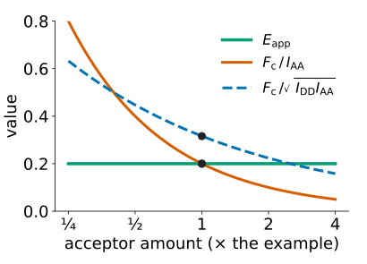
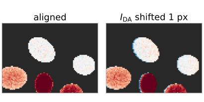

Three images, two controls: correcting sensitised emission
Image analysis
About this lecture
FRET makes the acceptor glow under donor excitation (sensitised emission). To measure it we look through the acceptor filter while exciting the donor. But that “FRET channel” is bright even without any FRET.
The three images of a sensitised-emission measurement.
Two contaminations: bleed-through of the donor and cross-excitation of the acceptor.
Two controls that measure them: donor only, acceptor only.
The correction is compensation with a fixed, triangular structure.
From the corrected signal F_c to an efficiency; why other indices mislead.
Subtracting large numbers: noise; and the practical pitfalls.
Slides titled The math give the formulas and proofs; the ideas are complete without them.
A channel collects a band; a dye’s emission tail reaches the neighbour’s band: bleed-through.
Signals add: a pixel is (mixing matrix) × (amounts).
A single-stained control measures one column of the mixing matrix, as the slope through the origin of one channel against the other, after subtracting the background.
Wrong coefficients: populations tilt (under- or over-compensated).
If you have not taken the unmixing day
A filter sees a band of wavelengths, and dye spectra are broad, so every dye shows up a little in the “wrong” channel. Image a sample with one dye only: the ratio of its signal in the wrong channel to its signal in its own channel, fitted over many pixels as a slope through zero, is the bleed-through coefficient.
Three images

I_{DD}: donor laser, donor filter: the (quenched) donor.
I_{AA}: acceptor laser, acceptor filter: the acceptor, excited directly. Measures how much acceptor is there.
I_{DA}: donor laser, acceptor filter: the FRET channel.
Same microscope, same settings for every image and every control.
G: how much sensitised acceptor signal one unit of lost donor signal produces (ratio of the acceptor’s to the donor’s quantum yield times detection efficiencies).
The donor signal without FRET would be c_{DD}N_D = I_{DD} + F_c/G. Hence
E_\text{app} = \frac{F_c}{F_c + G\,I_{DD}} = fE .
The controls
Donor-only sample: no acceptor, so I_{DA} = d \cdot I_{DD}. Plot I_{DA} against I_{DD} pixel by pixel: a line through the origin with slope d.
Acceptor-only sample: no donor, so I_{DA} = a \cdot I_{AA}: slope a.
Subtract the background first (an offset moves the line off the origin).
By hand, three donor-only pixels (I_{DD}, I_{DA}) = (200, 98), (400, 205), (800, 398):
d = \frac{\sum I_{DD}I_{DA}}{\sum I_{DD}^2} = \frac{420\,000}{840\,000} = 0.50 .

The coefficients belong to the microscope configuration (filters, lasers, detector), not to the dye pair: change a filter, measure again.
Compensation, with a structure
Write the three images as mixtures of three unknown signals: donor u, sensitised emission F_c, directly excited acceptor v:
The crosstalk unit’s mixing matrix, with most entries known to be zero: only the FRET channel is mixed.
Undoing it is trivial: u = I_{DD}, v = I_{AA}, F_c = I_{DA} - d\,I_{DD} - a\,I_{AA}.
The check without ground truth: a no-FRET control (donor and acceptor expressed but not bound) must give F_c \approx 0 at every expression level.
The math: the matrix and its inverse
L = \begin{pmatrix} 1 & 0 & 0\\ d & 1 & a\\ 0 & 0 & 1\end{pmatrix} is lower-triangular after reordering (only one row is mixed), with \det L = 1. Its inverse is
which is forward substitution: read u and v off the first and last rows, then subtract. With a spectral detector the same separation is done by least squares on the emission spectrum (lsunmix).
Try it: correct the FRET channel
Wrong coefficients make false FRET
d too small: part of the donor’s bleed-through stays in F_c. The residual is proportional to the donor: bright donor cells show “FRET” even without an acceptor.
a too small: the same with the acceptor.
Too large: negative F_c in controls (over-compensation).
Example: the pixel above with d = 0.4 instead of 0.5: F_c = 240 instead of 200. A no-FRET pixel with I_{DD} = 1000 shows a false F_c = 0.1 \cdot 1000 = 100.

Check: in the no-FRET cells, plot F_c against I_{DD}. A tilt means a wrong d (the crosstalk unit’s under/over picture).
From F_c to a number we can compare
F_c grows with how much donor is there. Three normalisations are in use:
index
formula
depends on
per acceptor
F_c / I_{AA}
E, f, and donor:acceptor ratio
symmetric
F_c / \sqrt{I_{DD} I_{AA}}
E, f, and\sqrt{\text{donor:acceptor}}
efficiency
E_\text{app} = F_c/(F_c + G\,I_{DD})
E, f only

Only E_\text{app} is an efficiency. The indices change when the acceptor is expressed at a different level, even if binding is the same.
Doubling the acceptor at fixed f and E halves the first and divides the second by \sqrt2; E_\text{app} = fE does not change. (With more acceptor, more donors may find a partner: then f itself changes, which is binding, not an artefact.)
Subtracting large numbers: noise
F_c is a small difference of bright images. Photon counts have variance equal to their mean (camera noise), and variances of independent images add:
the pixel above: \sigma_{F_c} = \sqrt{500 + 0.25\cdot400 + 0.01\cdot1000} = 24.7, i.e. 12 % of F_c = 200;
same brightness but low FRET (I_{DA} = 320, F_c = 20): \sigma = 20.7, about 100 %: one pixel says nothing.
Large d or a (similar spectra) make it worse, as in lsunmix: unmixing similar dyes amplifies noise.
Average over a cell (ratio of sums, unit 4) before turning F_c into a number.
The math: the variance of F_c
For independent Poisson images (\operatorname{Var} I = \operatorname{E} I):
An uncertain coefficient adds a systematic error: with \hat d = d + \delta, \hat F_c = F_c - \delta\,I_{DD}. Over many pixels this does not average out; over many experiments with independently estimated d it contributes \sigma_d^2 I_{DD}^2. Example: \sigma_d = 0.02, I_{DD} = 400: 8^2 = 64, total \sigma = \sqrt{610 + 64} = 26.0.
Practical pitfalls
Background first: an offset is a fake component; it also biases the slopes of the controls.
Saturation breaks the linear model: no pixel may clip in any of the three images.
Bleaching between the three acquisitions changes I_{AA} or I_{DD}; keep exposures short, check with repeated images.
Alignment: the three images must overlap pixel for pixel. A chromatic shift of one pixel puts positive and negative edges into F_c (align first: FFT registration).
Expression level: at high concentrations unbound donors and acceptors come close by chance (bystander FRET): compare at similar expression.

Summary
The FRET channel I_{DA} contains donor bleed-through (d\,I_{DD}), acceptor cross-excitation (a\,I_{AA}) and the sensitised emissionF_c.
A donor-only and an acceptor-only control give d and a as slopes through the origin, for this microscope configuration.
F_c = I_{DA} - d\,I_{DD} - a\,I_{AA} is compensation with a triangular mixing matrix; the no-FRET control must give zero.
Wrong coefficients give false FRET that follows the donor (or acceptor) brightness.
E_\text{app} = F_c/(F_c + G\,I_{DD}) = fE is an efficiency; F_c/I_{AA} and F_c/\sqrt{I_{DD}I_{AA}} also depend on the donor:acceptor ratio.
F_c is a difference of bright images: its relative noise is large when E is small. Background, saturation, bleaching, alignment and expression level all matter.